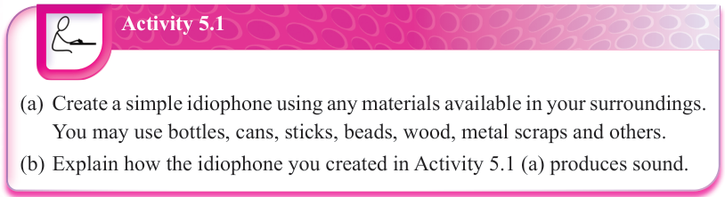
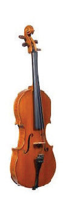
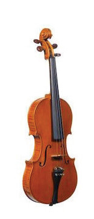
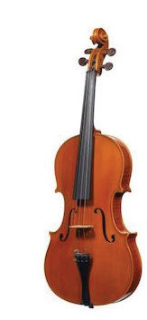
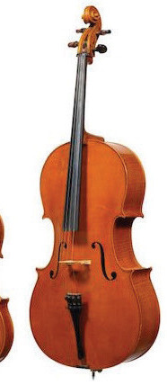
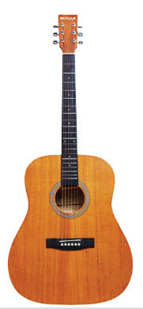

Activity 5.1
(a) Create a simple idiophone using any materials available in your surroundings.
You may use bottles, cans, sticks, beads, wood, metal scraps and others.
(b) Explain how the idiophone you created in Activity 5.1 (a) produces sound.
Chordophones
These are also referred to as string instruments.
It is a group of musical instruments that produce sounds by bowing, hammering, plucking or strumming on the strings.
Examples of these instruments include a piano, which produces sound through vibrating strings that are struck by hammers.
The strings resonate within the piano’s body to produce sound.
Chordophones also include a family of violin instruments such as, a violin itself, viola, cello and double bass, which produce sound by pushing and pulling a bow over the strings (bowing), or by plucking strings.
Acoustic guitar is another example of chordophones that is played by plucking or strumming strings.
Oud and qanun are other examples of chordophones originating from the Arab societies.
Examples of traditional chordophones found in Tanzania are zeze, enanga, litungu, bango (ipangwa) and ndono.
Figure 5.2 shows examples of chordophones.

Violin
Viola
Cello
Double bass
Acoustic guitar